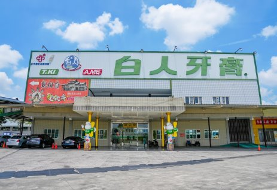
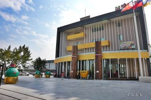
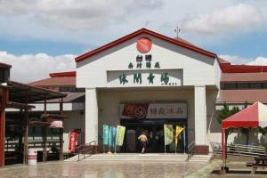

白人牙膏 |
|
|  | 白人牙膏觀光工廠是全國唯一開放式的牙膏觀光工廠，我們提供舒適的禮堂觀賞簡介影片並舉辦有獎徵答活動，在觀賞影片後每位遊客都能獲得試用的白人小牙膏。 地址:608嘉義縣水上鄉十一指厝144號 網址:白人牙膏官網 |
品皇咖啡 |
|
|  | 品皇咖啡觀光工廠是台灣少數以「咖啡」為展覽主題的觀光工廠，創辦人洪先生因緣際會開始接觸咖啡，從此這塊「黑金」和洪先生相伴一身。「品皇咖啡」為后政實業的自有品牌，經過長時間的用心經營，發展至今，已在兩岸 咖啡市場佔有一席之地。現在路上，比比皆是連鎖咖啡店，但民眾「喝」咖啡，卻對這塊黑金認識不夠，品皇咖啡為了讓民眾能更了解咖啡的來龍去脈，設立了「 品皇咖啡觀光工廠」。 地址:608嘉義縣水上鄉155號 |
|  | 南靖休閒賣場為國民旅遊卡特約商店，販賣台糖產品、日常生活用品、農特產品。還有台糖枝仔冰，口味多元，南靖糖廠以前是以碳酸法煉製出特殊傳統風味的耕地白糖，每逢製糖期間，廠區周遭即飄散著淡淡又似濃郁的蔗香，令人陶醉不已；以自產白糖製作遠近馳名的南靖糖冰，更值得您親蒞南靖休閒賣場品嚐，紅豆牛奶冰是這邊的招牌。 地址:嘉義縣水上鄉靖和村1號 |